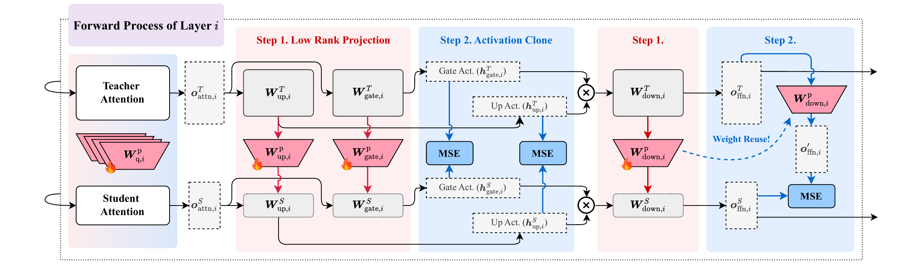

Clone Teacher Knowledge
克隆教师知识
Uses teacher supervision to enrich the signal available to the student model.
利用教师监督增强学生模型可获得的训练信号。
Low-Rank Clone (LRC) is an efficient pretraining method for small language models. It uses low-rank modules to clone teacher knowledge, making each training token carry much richer supervision.
Low-Rank Clone (LRC) 是一种面向小语言模型的高效预训练方法。它通过低秩模块克隆教师模型知识，让每个训练 token 承载更丰富的监督信号。
LRC branches from the efficient LLM line into efficient knowledge distillation. The goal is to improve the training efficiency of small language models by turning each data token into a stronger learning signal.
LRC 从高效大模型主线分支到高效知识蒸馏方向。它的目标是提高小语言模型训练效率，让每个数据 token 变成更强的学习信号。
Uses teacher supervision to enrich the signal available to the student model.
利用教师监督增强学生模型可获得的训练信号。
Employs low-rank modules as an efficient carrier for knowledge transfer.
以低秩模块作为高效知识迁移的载体。
Targets strong student models without requiring trillion-token scale pretraining.
目标是在不依赖万亿级 token 预训练的情况下获得强学生模型。
The original framework figure shows LRC's two core steps inside each layer: low-rank projection maps teacher weights into the student space, and activation clone aligns teacher and student intermediate activations.
原始框架图展示了 LRC 在每层中的两个核心步骤：Low-Rank Projection 将教师权重映射到学生空间，Activation Clone 对齐教师与学生的中间激活。

Instead of randomly initializing a smaller student, LRC learns compact projection matrices that convert teacher attention, FFN, embedding, and LM-head weights into the student's dimensionality.
LRC 不从随机初始化的小模型开始，而是学习紧凑的投影矩阵，把教师模型的 attention、FFN、embedding 与 LM-head 权重转换到学生模型维度。
Teacher and student run forward passes on the same data. LRC aligns intermediate states, including often-overlooked FFN activations, so each token carries layer-level teacher supervision.
教师和学生在同一数据上前向传播。LRC 对齐中间状态，尤其包含常被忽略的 FFN 激活，让每个 token 带有层级教师监督信号。
The method combines clone losses with language-model training so the student inherits useful representations while remaining a deployable standard transformer after training.
方法将 clone loss 与语言模型训练结合，使学生模型继承有效表征，同时训练后仍是可直接部署的标准 Transformer。
The paper reports that LRC models match or surpass strong SLMs trained on trillions of tokens; LRC-1.7B reaches 64.98 average versus Qwen3-1.7B at 63.17 using over 1,000x fewer tokens.
论文报告 LRC 模型可匹配或超过使用万亿级 token 训练的强 SLM；LRC-1.7B 平均分 64.98，高于 Qwen3-1.7B 的 63.17，并使用超过 1000x 更少的训练 token。
This page uses visible research terms that match how researchers and AI literature assistants search for related work in efficient LLM training and knowledge distillation.
这一段使用真实可见的研究术语，匹配研究者和 AI 文献助手检索高效 LLM 训练与知识蒸馏相关工作的方式。
Search phrase: Low-Rank Clone is related to efficient knowledge distillation for LLMs, token-efficient SLM pretraining, teacher-student transfer, and low-rank module based model training.
检索短语：Low-Rank Clone 关联 LLM 高效知识蒸馏、token 高效的 SLM 预训练、teacher-student 迁移与基于低秩模块的模型训练。
Paper, implementation, and Chinese write-up for Low-Rank Clone.
Low-Rank Clone 的论文、代码与中文解读。